Project Duration
Software Used
Workflow Steps
Deliverable
Project Facts
Executive Summary
This project involved detailed geological field mapping, structural interpretation, petrographic analysis and geological map production. Field observations were integrated with laboratory analyses to produce geological and structural maps of the study area.
Project Objectives
- Produce a detailed geological map.
- Identify lithological units.
- Measure geological structures.
- Interpret deformation history.
- Prepare thin sections.
- Produce structural maps.
Study Area
Geological mapping was conducted within the designated field area where lithological contacts, geological structures and deformation features were mapped and interpreted.
Methodology
- Field reconnaissance
- Traverse planning
- Compass traversing
- Outcrop description
- Structural measurements
- Sample collection
- Thin section preparation
- Petrographic analysis
- Geological interpretation
- GIS map production
Engineering Workflow
Step 1
Team briefing
Step 2
Traverse planning
Step 3
Compass navigation
Step 4
Outcrop identification
Step 5
Lithological description
Step 6
Structural measurements
Step 7
Sample collection
Step 8
Thin section preparation
Step 9
Petrographic interpretation
Step 10
Geological map production
Step 11
Structural map preparation
Step 12
Final report preparation
Engineering Workflow Gallery
{kind=link}
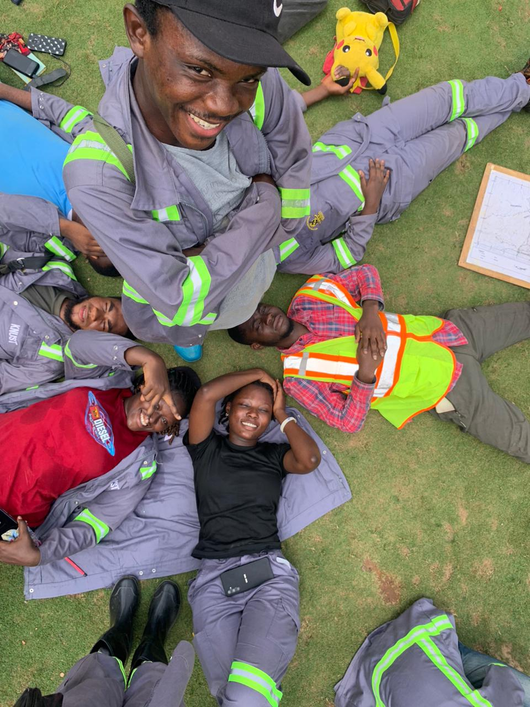
Step 1: Field Team
Geological field mapping team.
{kind=link}
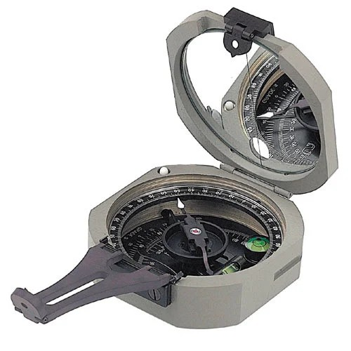
Step 2: Geological Compass
Compass-clinometer used for structural measurements.

Step 3: Outcrop Investigation I
Geological outcrop investigated during mapping.
{kind=link}
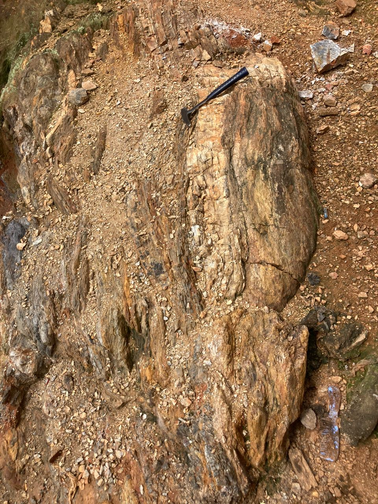
Step 4: Outcrop Investigation II
Detailed lithological observations.
{kind=link}
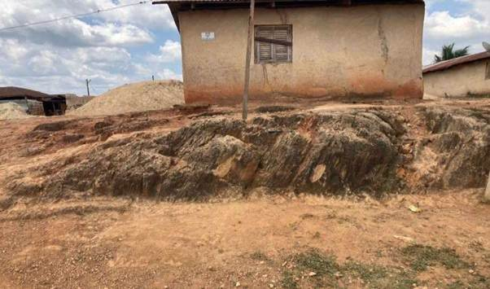
Step 5: Outcrop Investigation III
Structural measurements on exposed rocks.
{kind=link}
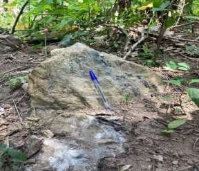
Step 6: Outcrop Investigation IV
Mapping lithological contacts.
{kind=link}
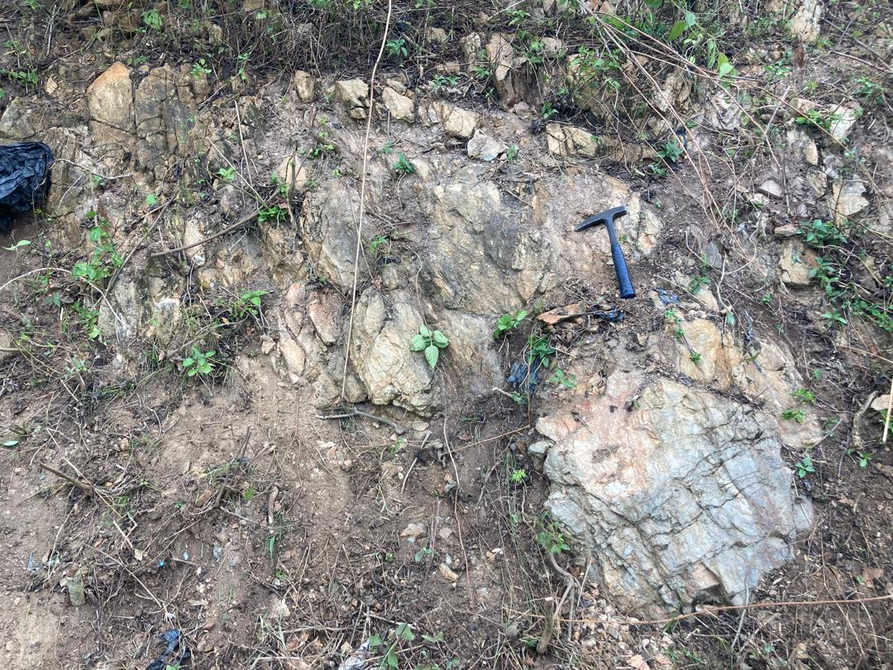
Step 7: Outcrop Investigation V
Recording structural information.
{kind=link}
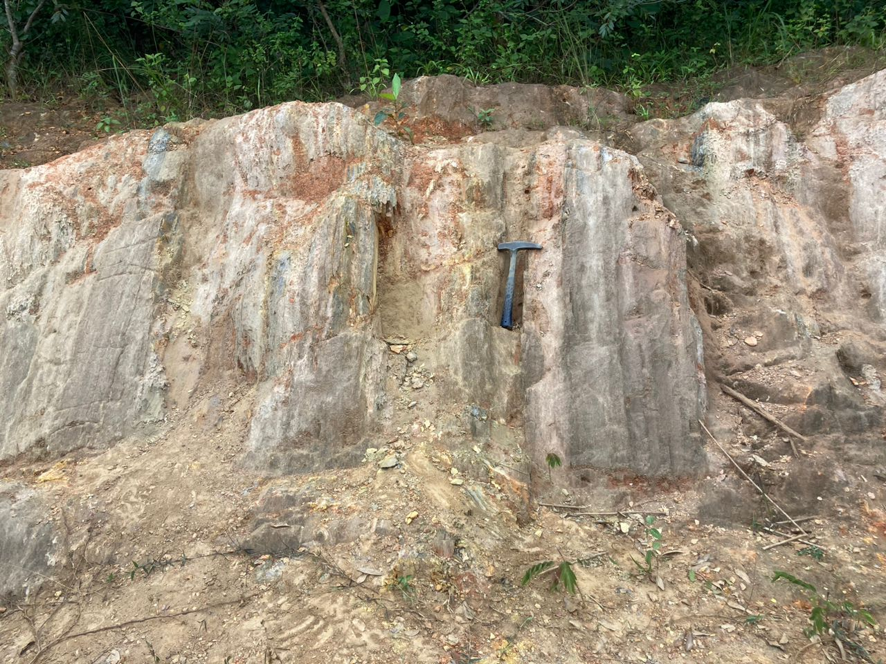
Step 8: Outcrop Investigation VI
Geological observations during traversing.
{kind=link}
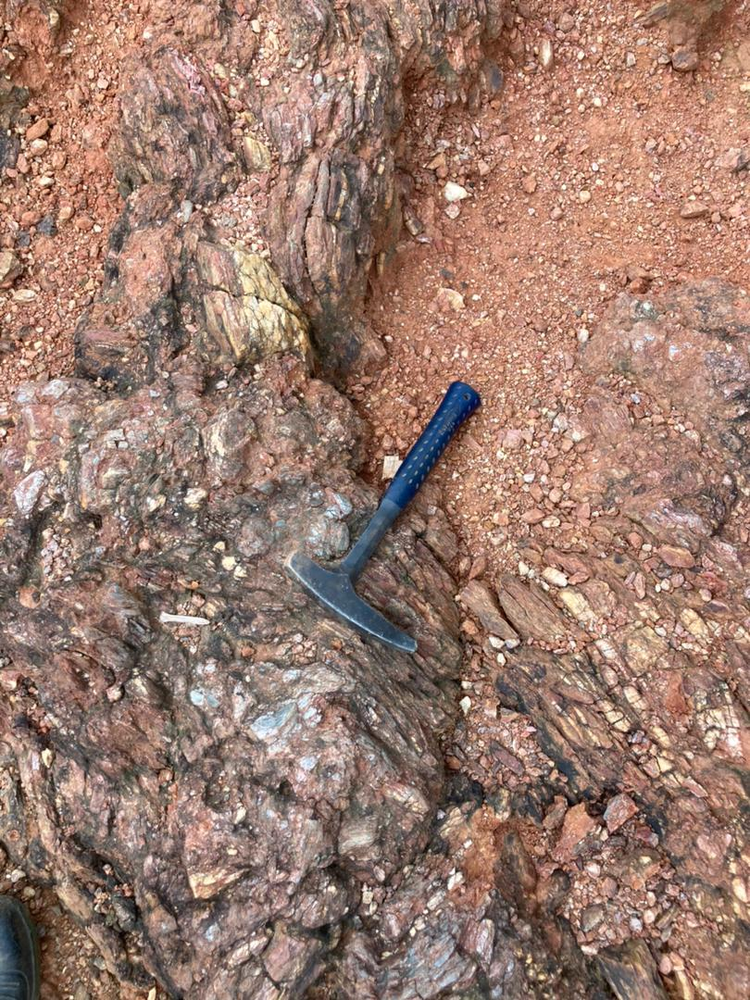
Step 9: Fold Structure
Folded geological structures observed in the field.
{kind=link}
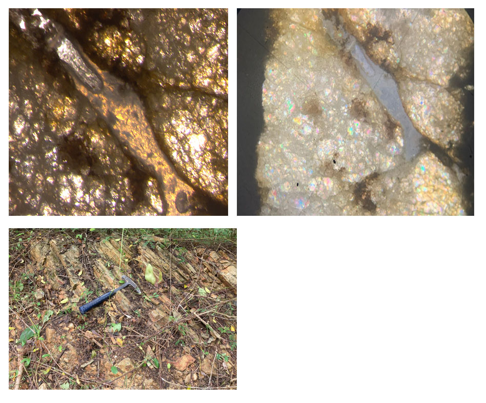
Step 10: Deformation Features
Evidence of rock deformation observed during mapping.
{kind=link}
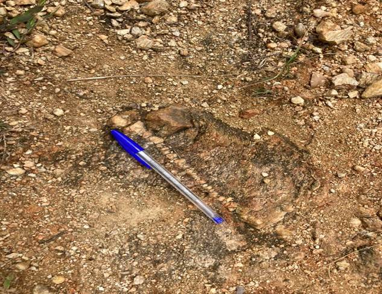
Step 11: Veinlet
Quartz veinlet identified within the host rock.
{kind=link}
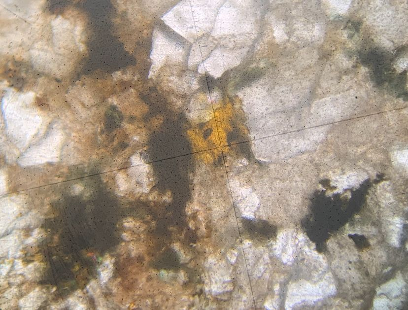
Step 12: Thin Section I
Petrographic analysis under the microscope.
{kind=link}
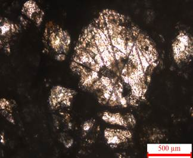
Step 13: Thin Section II
Mineralogical interpretation.
{kind=link}
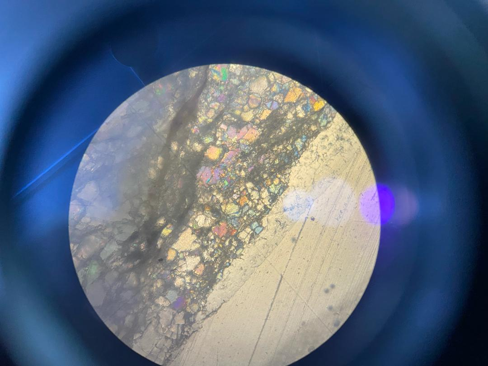
Step 14: Thin Section III
Identification of mineral textures.
{kind=link}
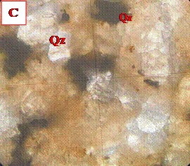
Step 15: Thin Section IV
Petrographic observations supporting field interpretation.
Results
- Geological units were successfully mapped.
- Structural measurements identified the dominant deformation trends.
- Thin section analysis confirmed field observations.
- Geological and structural maps were produced.
Lessons Learned
- Importance of careful field observations.
- Accurate structural measurements improve interpretation.
- Petrography complements field mapping.
- GIS significantly improves geological map production.
Software Used
Technical Skills Demonstrated
References
- Geological Society Field Guide.
- KNUST Geological Engineering Field Manual.
- Compton, R. R. (1985). Geology in the Field.
- Fossen, H. (2016). Structural Geology.
Project Report
Download Full Project ReportSpatial Distribution Maps
Spatial interpolation maps showing the distribution of heavy metals and pollution indices across the study area.
{kind=link}
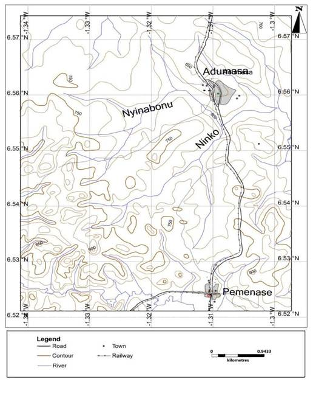
Base Map
Base map used during field mapping.
{kind=link}
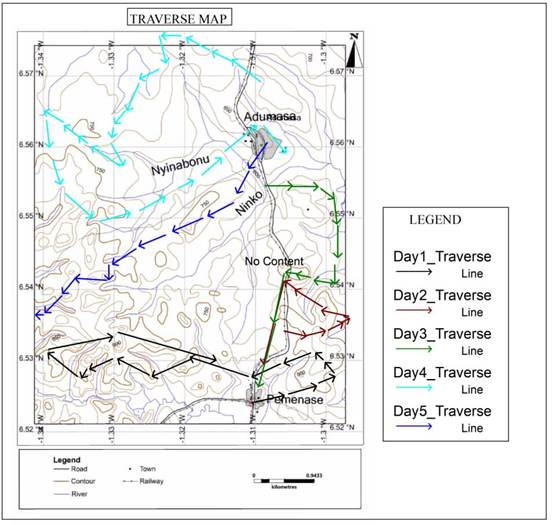
Traverse Map
Geological traverse routes.
{kind=link}
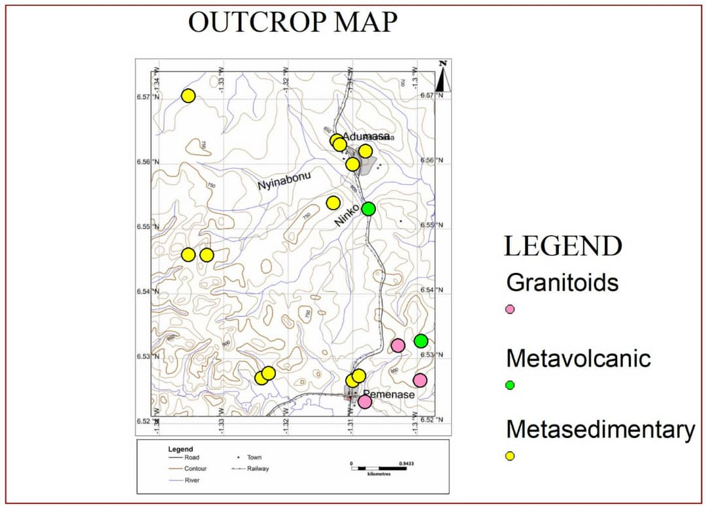
Outcrop Map
Distribution of mapped outcrops.
{kind=link}
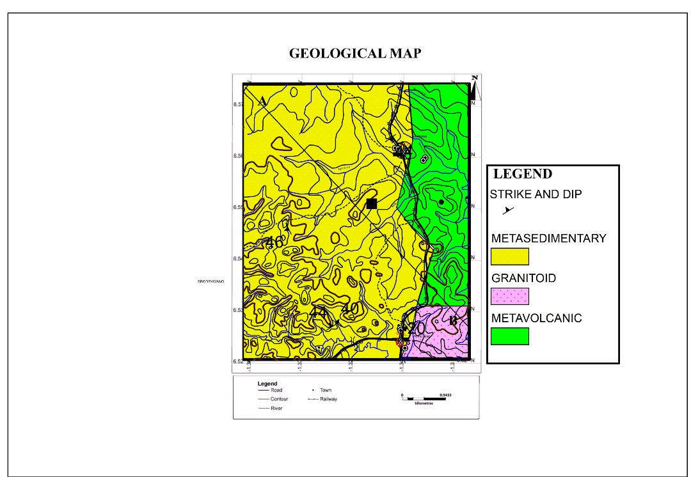
Geological Map
Final geological map of the study area.
{kind=link}
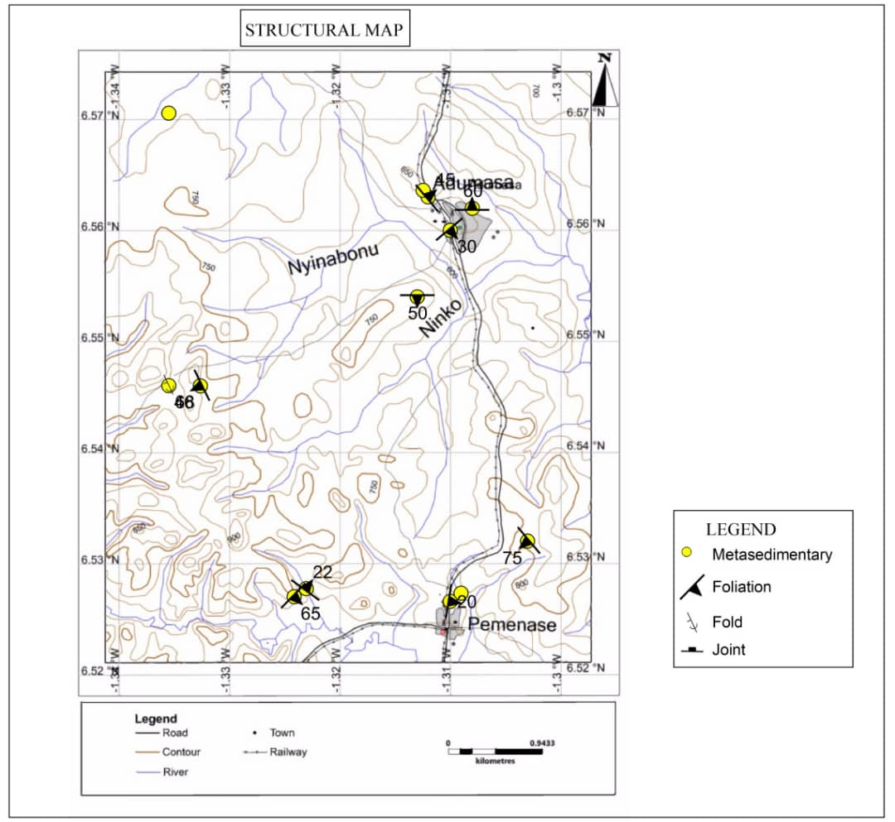
Structural Map
Structural interpretation map.
Software Used
Technical Skills
Project Downloads
Download reports, datasets, presentations and project resources.
Related Engineering Projects